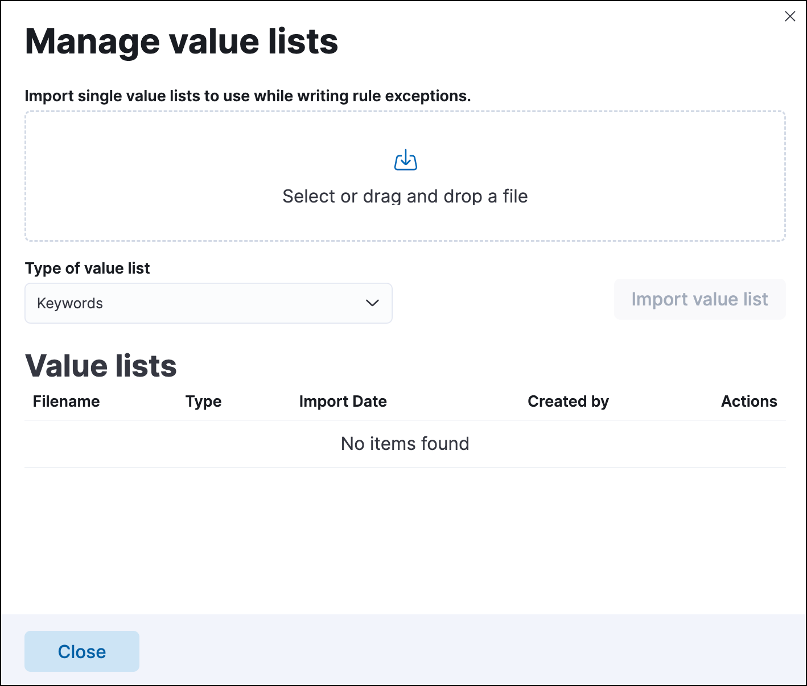
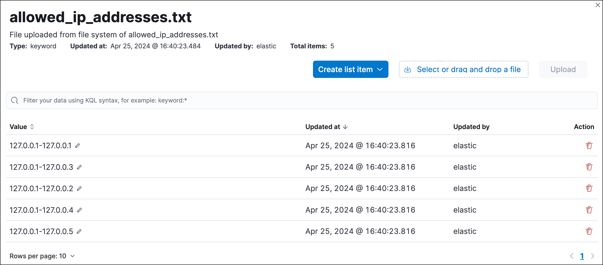

Create and manage value lists
editValue lists hold multiple values of the same Elasticsearch data type, such as IP addresses, which are used to determine when an exception prevents an alert from being generated. You can use value lists to define exceptions for detection rules; however, you cannot use value lists to define endpoint rule exceptions.
Value lists are lists of items with the same Elasticsearch data type. You can create value lists with these types:
-
Keywords(many ECS fields are keywords) -
IP Addresses -
IP Ranges -
Text
After creating value lists, you can use is in list and is not in list operators to define exceptions.
You can also use a value list as the indicator match index when creating an indicator match rule.
Create value lists
editWhen you create a value list for a rule exception, be mindful of the list’s size and data type. All rule types support value list exceptions, but extremely large lists or certain data types have limitations.
Custom query, machine learning, and indicator match rules support the following value list types and sizes:
- Keywords or IP addresses list types with more than 65,536 values
-
IP ranges list type with over 200 dash notation values (for example,
127.0.0.1-127.0.0.4is one value) or more than 65,536 CIDR notation values
To create a value list:
-
Prepare a
txtorcsvfile with all the values you want to use for determining exceptions from a single list. If you use atxtfile, new lines act as delimiters.- All values in the file must be of the same Elasticsearch type.
- Wildcards are not supported in value lists. Values must be literal values.
- The maximum accepted file size is 9 million bytes.
- Go to Rules → Detection rules (SIEM).
-
Click Manage value lists. The Manage value lists window opens.

- Select the list type (Keywords, IP addresses, IP ranges, or Text) from the Type of value list drop-down.
-
Drag or select the
csvortxtfile that contains the values. - Click Import value list.
If you import a file with a name that already exists, a new list is not created. The imported values are added to the existing list instead.
Manage value lists
editYou can edit, remove, or export existing value lists.
- Go to Rules → Detection rules (SIEM).
- Click Manage value lists. The Manage value lists window opens.
- In the Value lists table, click the value list you want to edit.
-
Do any of the following:
-
Filter items in the list: Use the KQL search bar to find values in the list. Depending on your list’s type, you can filter by the
keyword,ip_range,ip, ortextfields. For example, to filter by Gmail addresses in a value list of thekeywordtype, enterkeyword:*gmail.cominto the search bar.You can also filter by the
updated_byfield (for example,updated_by:testuser), or theupdated atfield (for example,updated_at < now). - Add individual items to the list: Click Create list item, enter a value, then click Add list item.
-
Bulk upload list items: Drag or select the
csvortxtfile that contains the values that you want to add, then click Upload. -
Edit a value: In the Value column, go to the value you want to edit and click the Edit button (). When you’re done editing, click the Save button () to save your changes. Click the Cancel button (
 ) to revert your changes.
) to revert your changes.
-
Remove a value: Click the Remove value button (
 ) to delete a value from the list.
) to delete a value from the list.
-
You can also edit value lists while creating and managing exceptions that use value lists.
- Go to Rules → Detection rules (SIEM).
- Click Manage value lists. The Manage value lists window opens.
-
From the Value lists table, you can:
- Click the Export value list button () to export the value list.
-
Click the Remove value list button () to delete the value list.